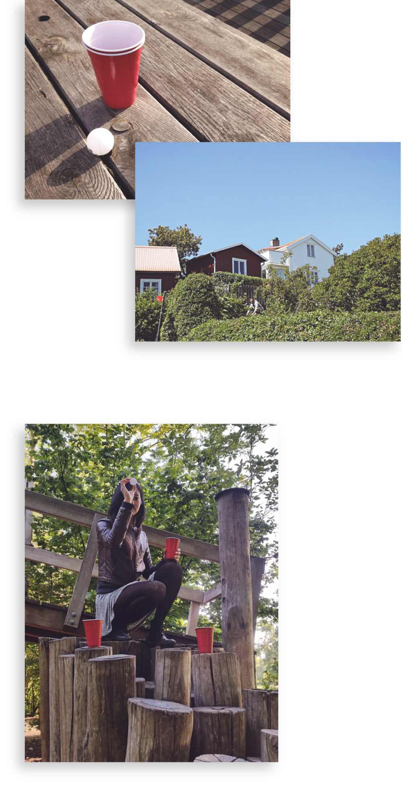
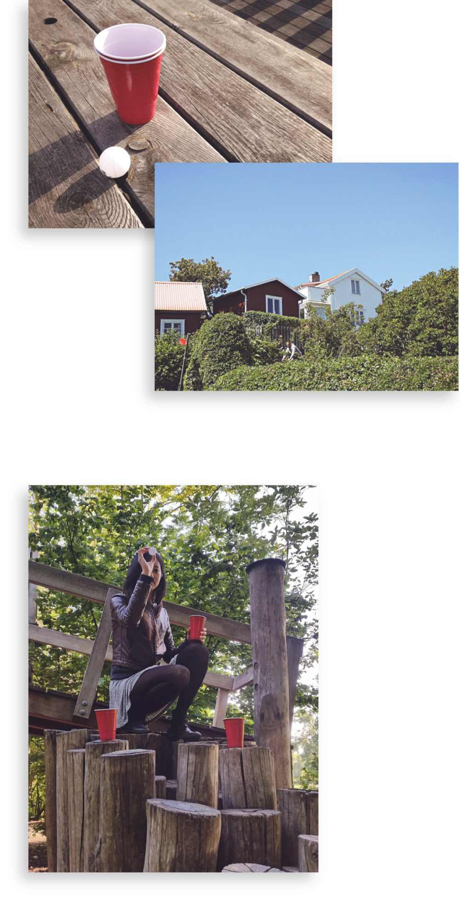
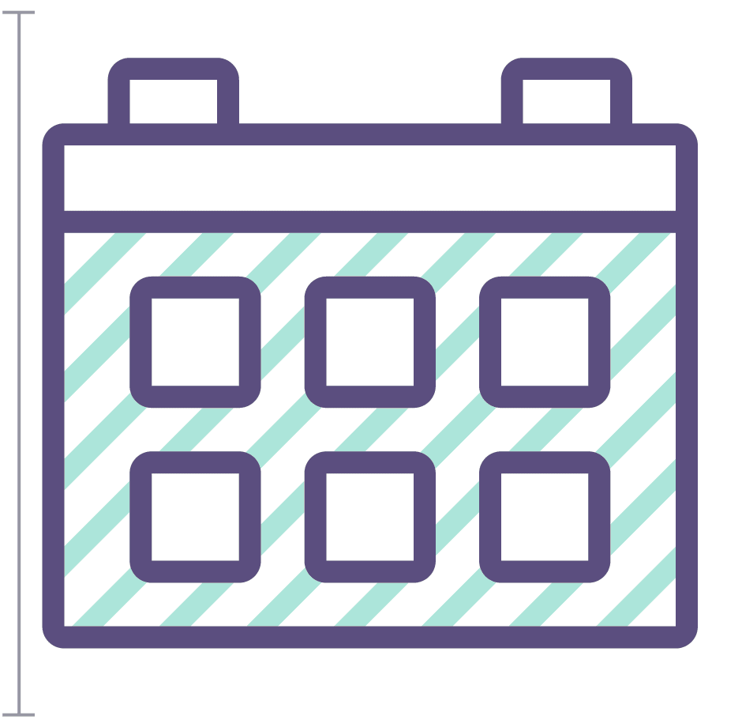
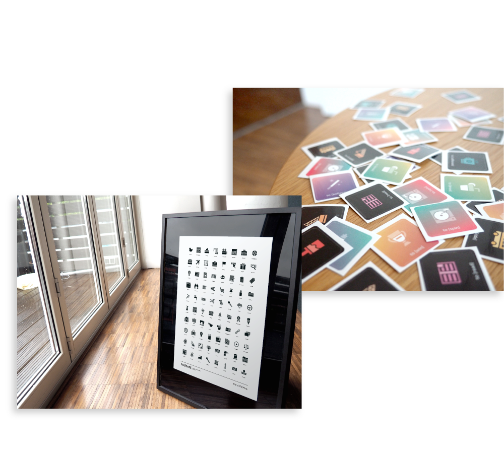
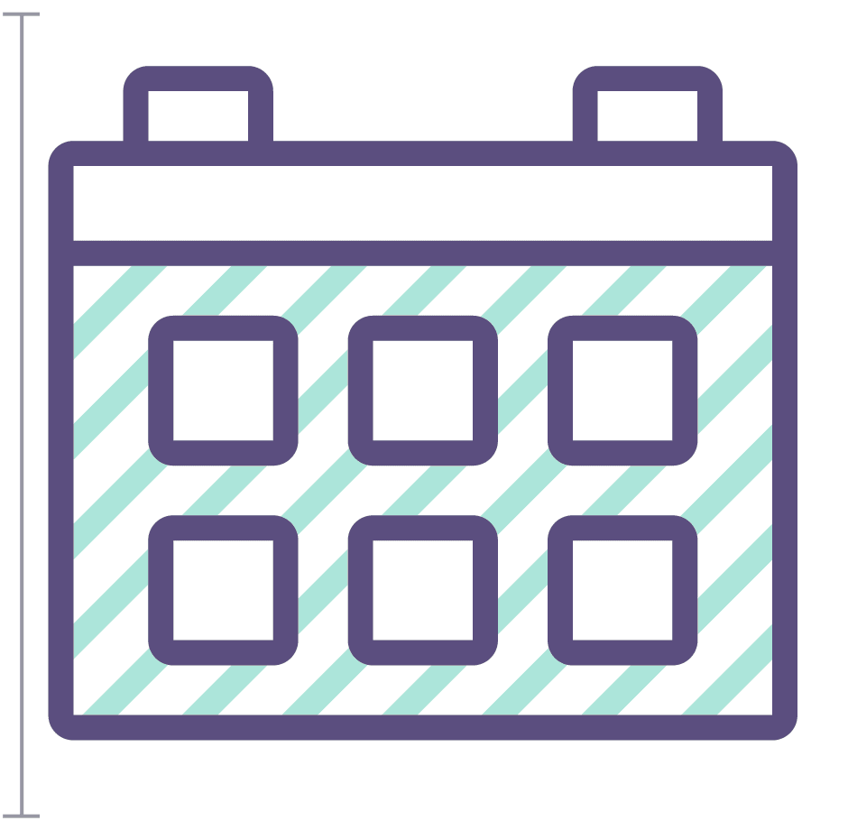
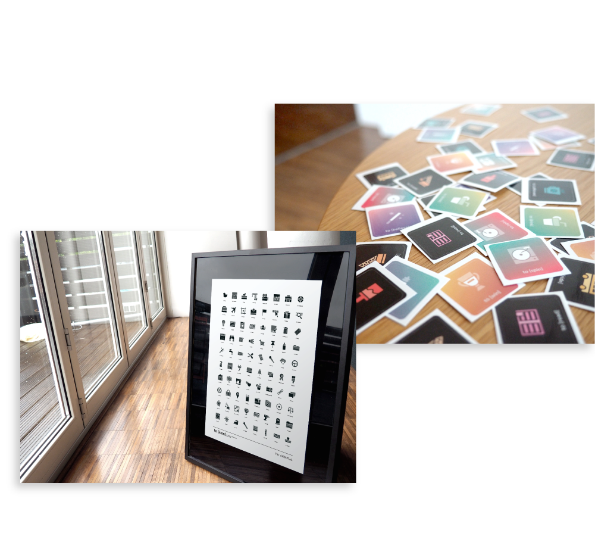

Huddle
An app for the creative community that allows users to discover conferences and keep them organized in one central app.

Huddle
Huddle is a conference app for the creative community. This experiment stemmed from the nuisance of scouring through multiple pamphlets and inconsistent mobile sites to access critical conference data and updates. My goal was to design a way to minimize time searching for information and maximize the user's engagement with the conference and fellow attendees.
I defined the product’s essential features based off results from user surveys and mapped features and personas to three user engagement points – browsing, awaiting, and attending. I created a gestural flow diagram and then prototyped some key interactions to show the app's personality through motion [Read more about the prototyping experiment]. The result is an app that is consistant and stays relevant regardless of the users place in the engagement cycle.
 

![to [icon]](img/toicon-1.png) 


